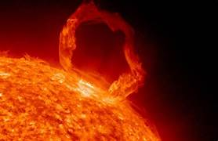
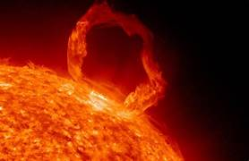

Historia de la Exploración Espacial
La exploración espacial es una de las actividades más emocionantes y transformadoras que la humanidad ha emprendido. Implica el uso de tecnología para viajar más allá de la atmósfera de la Tierra y estudiar el espacio y los cuerpos celestes.
Datos curiosos
- El espacio es casi un vacío perfecto: Aunque contiene muy poca materia, en el espacio interplanetario y entre las estrellas hay partículas subatómicas, gas y polvo cósmico, pero en cantidades tan ínfimas que se considera casi un vacío.
- Los planetas no son completamente redondos: La rotación hace que los planetas se abulten en el ecuador. Un buen ejemplo es Júpiter, que tiene una forma oblonga debido a su rápida rotación.
- La Vía Láctea es solo una de miles de millones de galaxias: Nuestra galaxia es solo una en un universo lleno de miles de millones de galaxias, cada una con miles de millones de estrellas.
- El universo se está expandiendo: Las galaxias se están alejando unas de otras debido a la expansión del universo. Esta expansión se está acelerando por la energía oscura, una forma misteriosa de energía que constituye aproximadamente el 68% del universo.
- Existen los agujeros negros: Son regiones del espacio donde la gravedad es tan fuerte que ni siquiera la luz puede escapar de ellos. Se forman cuando una estrella masiva colapsa al final de su vida.
- El sonido no se puede propagar en el espacio: Debido a que no hay un medio (como el aire) para transportar las ondas sonoras, el espacio es completamente silencioso.
- El sol es una estrella promedio: Aunque es vital para la vida en la Tierra, el sol es una estrella de tamaño y temperatura promedio en comparación con otras estrellas del universo.
- Hay planetas hechos de diamante: Se ha descubierto que algunos exoplanetas podrían estar compuestos en gran parte de carbono y, bajo las presiones adecuadas, podrían tener una superficie de diamante.


 
